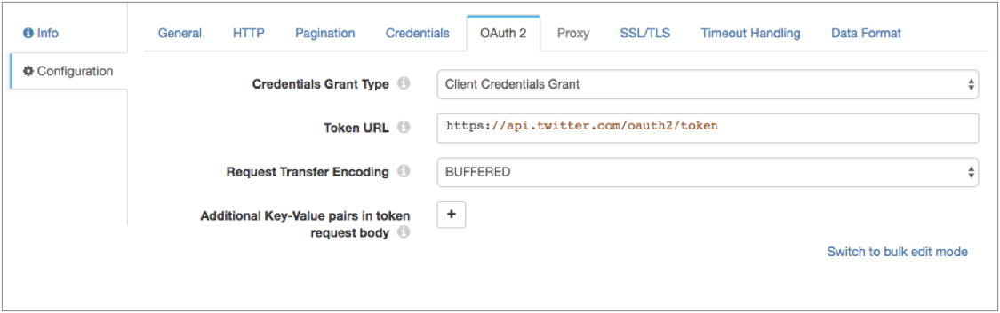

HTTP Client
The HTTP Client origin reads data from an HTTP resource URL.
When you configure HTTP Client, you specify the resource URL, optional headers, and the method to use. For some methods, you can specify the request body and default content type.
You can configure the actions to take based on the response status and configure pagination properties to enable processing large volumes of data from paginated APIs. You can also enable the origin to read compressed and archived files.
The origin provides response header fields as record header attributes so you can use the information in the pipeline when needed.
The origin also provides several different authentication types to access data. You can enter credentials in the origin or you can secure the credentials in runtime resource files and reference the files in the origin. You can also configure the origin to use the OAuth 2 protocol to connect to an HTTP service.
Processing Mode
- Streaming
- HTTP Client maintains a connection and processes data as it becomes available. Use to process streaming data in real time.
- Polling
- HTTP Client polls the server at the specified interval for available data. Use to access data periodically, such as metrics and events at a REST endpoint.
- Batch
- HTTP Client processes all available data and then stops the pipeline. Use to process data as needed.
Pagination
You can use pagination to retrieve a large volume of data from a paginated API. Use the pagination type supported by the API of the HTTP client.
The HTTP Client origin supports the following common pagination types:
- Link HTTP Header
- After processing the current set of data, uses the link in the header to access the next set of data.
- By Page Number
- Begins processing with the specified initial page, and then requests the following page.
- By Offset Number
- Begins processing with the specified initial offset, and then requests the following offset.
Result Field Path
When using pagination, you must specify the result field path. The result field path is the location in the response that contains the data that you want to process.
The result field path must be a list or array. The origin creates a record for each object in the array.
{
"count":"1023",
"startAt":"2",
"maxResults":"2",
"total":"6",
"results":[
{
"firstName":"Joe",
"lastName":"Smith",
"phone":"555-555-5555"
},
{
"firstName":"Jimmy",
"lastName":"Smott",
"phone":"333-333-3333"
},
{
"firstName":"Joanne",
"lastName":"Smythe",
"phone":"777-777-7777"
}
]
}
{
"firstName":"Joe",
"lastName":"Smith",
"phone":"555-555-5555"
}
{
"firstName":"Jimmy",
"lastName":"Smott",
"phone":"333-333-3333"
}
{
"firstName":"Joanne",
"lastName":"Smythe",
"phone":"777-777-7777"
}
Keep All Fields
When using pagination, you can configure the origin to keep all fields in addition to those in the specified result field path. The resulting record includes all fields in the original structure and the result field path that includes one set of data. By default, the origin returns only the data within the specified result field path.
For example, say we use the same sample data as above, with /results for the result field path. And we configure the origin to keep all fields. The origin generates three records that keep the existing record structure, and includes one set of data in the /results field.
{
"count":"1023",
"startAt":"2",
"maxResults":"2",
"total":"6",
"results":{
"firstName":"Joe",
"lastName":"Smith",
"phone":"555-555-5555"
}
}
The second record:
{
"count":"1023",
"startAt":"2",
"maxResults":"2",
"total":"6",
"results":{
"firstName":"Jimmy",
"lastName":"Smott",
"phone":"333-333-3333"
}
}
{
"count":"1023",
"startAt":"2",
"maxResults":"2",
"total":"6",
"results":{
"firstName":"Joanne",
"lastName":"Smythe",
"phone":"777-777-7777"
}
}
HTTP Method
To request data from an HTTP resource URL, specify the request method to use. Most servers require a GET request, but you should verify the request required by the server you want to access.
- GET
- PUT
- POST
- DELETE
- HEAD
OAuth 2 Authorization
You can configure the HTTP Client origin to use the OAuth 2 protocol to connect to an HTTP service that uses basic, digest, or universal authentication, OAuth 2 client credentials, OAuth 2 username and password, or OAuth 2 JSON Web Tokens (JWT).
The OAuth 2 protocol authorizes third-party access to HTTP service resources without sharing credentials. The HTTP Client origin uses credentials to request an access token from the service. The service returns the token to the origin, and then the origin includes the token in a header in each request to the resource URL.
- Client credentials grant
-
HTTP Client sends its own credentials - the client ID and client secret or the basic, digest, or universal authentication credentials - to the HTTP service. For example, use the client credentials grant to process data from the Twitter API or from the Microsoft Azure Active Directory (Azure AD) API.
For more information about the client credentials grant, see https://tools.ietf.org/html/rfc6749#section-4.4.
- Resource owner password credentials grant
-
HTTP Client sends the credentials for the resource owner - the resource owner username and password - to the HTTP service. Or, you can use this grant type to migrate existing clients using basic, digest, or universal authentication to OAuth 2 by converting the stored credentials to an access token.
For example, use this grant to process data from the Getty Images API. For more information about using OAuth 2 to connect to the Getty Images API, see http://developers.gettyimages.com/api/docs/v3/oauth2.html.
For more information about the resource owner password credentials grant, see https://tools.ietf.org/html/rfc6749#section-4.3.
- JSON Web Tokens (JWT)
-
HTTP Client sends a JSON-based security token encoding to the HTTP service. For example, use JSON Web Tokens to process data from the Google API.
Let’s look at some examples of how to configure authentication and OAuth 2 authorization to process data from Twitter, Microsoft Azure AD, and Google APIs.
Example for Twitter
To use OAuth 2 authorization to read from Twitter, configure HTTP Client to use basic authentication and the client credentials grant.
For more information about configuring OAuth 2 authorization for Twitter, see https://dev.twitter.com/oauth/application-only.
The following image shows the OAuth 2 tab configured for Twitter:

Example for Microsoft Azure AD
To use OAuth 2 authorization to read from Microsoft Azure AD, configure HTTP Client to use no authentication and the client credentials grant.
The following image shows the OAuth 2 tab configured for Microsoft Azure AD version 1.0:

Example for Google
To use OAuth 2 authorization to read from Google service accounts, configure HTTP Client to use no authentication and the JSON Web Tokens grant.
For more information about configuring OAuth 2 authorization for Google, see https://developers.google.com/identity/protocols/OAuth2.

Data Formats
The HTTP Client origin processes data differently based on the data format. The origin processes the following types of data:
- Binary
- Generates a record with a single byte array field at the root of the record.
- When the data exceeds the user-defined maximum data size, the origin cannot process the data. Because the record is not created, the origin cannot pass the record to the pipeline to be written as an error record. Instead, the origin generates a stage error.
- Delimited
- Generates a record for each delimited line. You can use the
following delimited format types:
- Default CSV - File that includes comma-separated values. Ignores empty lines in the file.
- RFC4180 CSV - Comma-separated file that strictly follows RFC4180 guidelines.
- MS Excel CSV - Microsoft Excel comma-separated file.
- MySQL CSV - MySQL comma separated file.
- Tab-Separated Values - File that includes tab-separated values.
- Custom - File that uses user-defined delimiter, escape, and quote characters.
- You can use a list or list-map root field type for delimited data, optionally including the header information when available. For more information about the root field types, see Delimited Data Root Field Type.
- When using a header line, you can allow processing records with additional columns. The additional columns are named using a custom prefix and integers in sequential increasing order, such as _extra_1, _extra_2. When you disallow additional columns when using a header line, records that include additional columns are sent to error.
- You can also replace a string constant with null values.
- When a record exceeds the maximum record length defined for the origin, the origin processes the object based on the error handling configured for the stage.
- JSON
- Generates a record for each JSON object.
- When an object exceeds the specified maximum object length, the origin processes the object based on the error handling configured for the stage.
- Log
- Generates a record for every log line.
- When a line exceeds the user-defined maximum line length, the origin truncates longer lines.
- You can include the processed log line as a field in the record. If the log line is truncated, and you request the log line in the record, the origin includes the truncated line.
- You can define the log format or type to be read.
- SDC Record
- Generates a record for every record. Use to process records generated by a Data Collector pipeline using the SDC Record data format.
- For error records, the origin provides the original record as read from the origin in the original pipeline, as well as error information that you can use to correct the record.
- When processing error records, the origin expects the error file names and contents as generated by the original pipeline.
- Text
- Generates a record for each line of text.
- When a line exceeds the specified maximum line length, the origin truncates the line. The origin adds a boolean field named Truncated to indicate if the line was truncated.
- XML
- Generates records based on a user-defined delimiter element. Use an XML element directly under the root element or define a simplified XPath expression. If you do not define a delimiter element, the origin treats the XML file as a single record.
- Generated records include XML attributes and namespace declarations as fields in the record by default. You can configure the stage to include them in the record as field attributes.
- You can include XPath information for each parsed XML element and
XML attribute in field attributes. This also places each
namespace in an xmlns record header attribute. Note: Field attributes and record header attributes are written to destination systems automatically only when you use the SDC RPC data format in destinations. For more information about working with field attributes and record header attributes, and how to include them in records, see Field Attributes and Record Header Attributes.
- When a record exceeds the user-defined maximum record length, the origin skips the record and continues processing with the next record. It sends the skipped record to the pipeline for error handling.
- Use the XML data format to process valid XML documents. For more information about XML processing, see Reading and Processing XML Data.
-
Tip: If you want to process invalid XML documents, you can try using the text data format with custom delimiters. For more information, see Processing XML Data with Custom Delimiters.
Response Header Fields in Header Attributes
The HTTP Client origin includes response header fields – such as Content-Encoding, Content-Type, or any custom response header field – in records as record header attributes. The attribute names match the original response header field name.
Configuring an HTTP Client Origin
Configure an HTTP Client origin to read data from an HTTP resource URL.
-
In the Properties panel, on the General tab, configure the
following properties:
General Property Description Name Stage name. Description Optional description. On Record Error 
Error record handling for the stage: - Discard - Discards the record.
- Send to Error - Sends the record to the pipeline for error handling.
- Stop Pipeline - Stops the pipeline.
-
On the HTTP tab, configure the following properties:
HTTP Property Description Resource URL URL where the data resides. Headers Optional headers to include in the request. Using simple or bulk edit mode, click the Add icon to add additional headers. Mode Processing mode: - Streaming - Maintains a connection and processes data as it becomes available.
- Polling - Connects periodically to check for data.
- Batch - Processes all available data, and then stops the pipeline.
Polling Interval (ms) Milliseconds to wait before checking for new data. Used in the polling mode only. Per-Status Actions Actions to take for specific response statuses. For example, you can configure the origin to retry the request with an exponential backoff when it receives a 500 HTTP status code. Click Add to add an action for an additional status code.
HTTP Method HTTP method to use to request data from the server. Body Time Zone Time zone to use for evaluating the request body. Use when the request body includes datetime variables or time functions. Request Body Request data to use with the specified method. Available for the PUT, POST, and DELETE methods. You can use time functions and datetime variables, such as ${YYYY()}, in the request body.
Default Request Content Type Content-Type header to include in the request. Used only when the Content-Type header is not present. Available for the PUT, POST, and DELETE methods.
Default is application/json.
Request Transfer Encoding Use one of the following encoding types: - Buffered - The standard transfer encoding type.
- Chunked - Transfers data in chunks. Not supported by all servers.
The default is Chunked.
Connect Timeout Maximum number of milliseconds to wait for a connection. Use 0 to wait indefinitely.
Read Timeout Maximum number of milliseconds to wait for data. Use 0 to wait indefinitely.
Authentication Type Determines the authentication type used to connect to the server: - None - Performs no authentication.
- Basic - Uses basic authentication. Requires a username and password.
Use with HTTPS to avoid passing unencrypted credentials.
- Digest - Uses digest authentication. Requires a username and password.
- Universal - Makes an anonymous connection, then provides authentication credentials
upon receiving a 401 status and a WWW-Authenticate header request.
Requires a username and password associated with basic or digest authentication.
Use only with servers that respond to this workflow.
- OAuth - Uses OAuth 1.0 authentication. Requires OAuth credentials.
Use OAuth 2 Enables using OAuth 2 authorization to request access tokens. You can use OAuth 2 authorization with none, basic, digest, or universal authentication.
Use Proxy Enables using an HTTP proxy to connect to the system.
Max Batch Size (records) Maximum number of records to include in a batch and send through the pipeline at one time. Batch Wait Time (ms) 
Maximum number of milliseconds wait before sending a partial or empty batch. -
On the Pagination tab, optionally configure pagination
details:
Pagination Property Description Pagination Mode Method of pagination to use. Use a method supported by the API of the HTTP client. Initial Page/Offset The initial page for page number pagination, or the initial offset for offset number pagination. Result Field Path Field path in the response that contains the data that you want to process. Must be a list or array field. The origin generates a record for each object in the specified field.
Keep All Fields Includes all fields from the response in the resulting record when enabled. By default, only the fields in the specified result field path are included in the record.
Wait Time Between Pages (ms) The number of milliseconds to wait before requesting the next page of data. -
To use SSL/TLS, on the TLS tab, configure the following
properties:
TLS Property Description Use TLS Enables the use of TLS.
Keystore File The path to the keystore file. Enter an absolute path to the file or a path relative to the Data Collector resources directory: $SDC_RESOURCES. For more information about environment variables, see Data Collector Environment Configuration.
By default, no keystore is used.
Keystore Type Type of keystore to use. Use one of the following types: - Java Keystore File (JKS)
- PKCS-12 (p12 file)
Default is Java Keystore File (JKS).
Keystore Password Password to the keystore file. A password is optional, but recommended. Tip: To secure sensitive information such as passwords, you can use runtime resources or credential stores.Keystore Key Algorithm The algorithm used to manage the keystore. Default is SunX509.
Truststore File The path to the truststore file. Enter an absolute path to the file or a path relative to the Data Collector resources directory: $SDC_RESOURCES. For more information about environment variables, see Data Collector Environment Configuration.
By default, no truststore is used.
Truststore Type Type of truststore to use. Use one of the following types: - Java Keystore File (JKS)
- PKCS-12 (p12 file)
Default is Java Keystore File (JKS).
Truststore Password Password to the truststore file. A password is optional, but recommended. Tip: To secure sensitive information such as passwords, you can use runtime resources or credential stores.Truststore Trust Algorithm The algorithm used to manage the truststore. Default is SunX509.
Use Default Protocols Determines the transport layer security (TLS) protocol to use. The default protocol is TLSv1.2. To use a different protocol, clear this option. Transport Protocols The TLS protocols to use. To use a protocol other than the default TLSv1.2, click the Add icon and enter the protocol name. You can use simple or bulk edit mode to add protocols. Note: Older protocols are not as secure as TLSv1.2.Use Default Cipher Suites Determines the cipher suite to use when performing the SSL/TLS handshake. Data Collector provides a set of cipher suites that it can use by default. For a full list, see Cipher Suites.
Cipher Suites Cipher suites to use. To use a cipher suite that is not a part of the default set, click the Add icon and enter the name of the cipher suite. You can use simple or bulk edit mode to add cipher suites. Enter the Java Secure Socket Extension (JSSE) name for the additional cipher suites that you want to use.
-
On the Data Format tab, configure the following
property:
Data Format Property Description Data Format Format of data. Use one of the following options: - Binary
- Delimited
- JSON
- Log
- SDC Record
- Text
- XML
-
For binary data, on the Data Format tab, configure the
following properties:
Binary Property Description Compression Format The compression format of the files: - None - Processes only uncompressed files.
- Compressed File - Processes files compressed by the supported compression formats.
- Archive - Processes files archived by the supported archive formats.
- Compressed Archive - Processes files archived and compressed by the supported archive and compression formats.
File Name Pattern within Compressed Directory File name pattern that represents the files to process within the compressed directory. You can use UNIX-style wildcards, such as an asterisk or question mark. For example, *.json. Default is *, which processes all files.
Max Data Size (bytes) Maximum number of bytes in the message. Larger messages cannot be processed or written to error. -
For delimited data, on the Data Format tab, configure the
following properties:
Delimited Property Description Compression Format The compression format of the files: - None - Processes only uncompressed files.
- Compressed File - Processes files compressed by the supported compression formats.
- Archive - Processes files archived by the supported archive formats.
- Compressed Archive - Processes files archived and compressed by the supported archive and compression formats.
File Name Pattern within Compressed Directory File name pattern that represents the files to process within the compressed directory. You can use UNIX-style wildcards, such as an asterisk or question mark. For example, *.json. Default is *, which processes all files.
Delimiter Format Type Delimiter format type. Use one of the following options: - Default CSV - File that includes comma-separated values. Ignores empty lines in the file.
- RFC4180 CSV - Comma-separated file that strictly follows RFC4180 guidelines.
- MS Excel CSV - Microsoft Excel comma-separated file.
- MySQL CSV - MySQL comma separated file.
- Tab-Separated Values - File that includes tab-separated values.
- Custom - File that uses user-defined delimiter, escape, and quote characters.
Header Line Indicates whether a file contains a header line, and whether to use the header line. Allow Extra Columns When processing data with a header line, allows processing records with more columns than exist in the header line. Extra Column Prefix Prefix to use for any additional columns. Extra columns are named using the prefix and sequential increasing integers as follows: <prefix><integer>. For example, _extra_1. Default is _extra_.
Max Record Length (chars) Maximum length of a record in characters. Longer records are not read. This property can be limited by the Data Collector parser buffer size. For more information, see Maximum Record Size.
Delimiter Character Delimiter character for a custom delimiter format. Select one of the available options or use Other to enter a custom character. You can enter a Unicode control character using the format \uNNNN, where N is a hexadecimal digit from the numbers 0-9 or the letters A-F. For example, enter \u0000 to use the null character as the delimiter or \u2028 to use a line separator as the delimiter.
Default is the pipe character ( | ).
Escape Character Escape character for a custom file type. Quote Character Quote character for a custom file type. Root Field Type Root field type to use: - List-Map - Generates an indexed list of data. Enables you to use standard functions to process data. Use for new pipelines.
- List - Generates a record with an indexed list with a map for header and value. Requires the use of delimited data functions to process data. Use only to maintain pipelines created before 1.1.0.
Lines to Skip Lines to skip before reading data. Parse NULLs Replaces the specified string constant with null values. NULL Constant String constant to replace with null values. Charset Character encoding of the files to be processed. Ignore Ctrl Characters Removes all ASCII control characters except for the tab, line feed, and carriage return characters. -
For JSON data, on the Data Format tab, configure the
following properties:
JSON Property Description Compression Format The compression format of the files: - None - Processes only uncompressed files.
- Compressed File - Processes files compressed by the supported compression formats.
- Archive - Processes files archived by the supported archive formats.
- Compressed Archive - Processes files archived and compressed by the supported archive and compression formats.
File Name Pattern within Compressed Directory File name pattern that represents the files to process within the compressed directory. You can use UNIX-style wildcards, such as an asterisk or question mark. For example, *.json. Default is *, which processes all files.
Maximum Object Length (chars) Maximum number of characters in a JSON object. Longer objects are diverted to the pipeline for error handling.
This property can be limited by the Data Collector parser buffer size. For more information, see Maximum Record Size.
Charset Character encoding of the data to be processed. Ignore Ctrl Characters Removes all ASCII control characters except for the tab, line feed, and carriage return characters. -
For log data, on the Data Format tab, configure the
following properties:
Log Property Description Compression Format The compression format of the files: - None - Processes only uncompressed files.
- Compressed File - Processes files compressed by the supported compression formats.
- Archive - Processes files archived by the supported archive formats.
- Compressed Archive - Processes files archived and compressed by the supported archive and compression formats.
File Name Pattern within Compressed Directory File name pattern that represents the files to process within the compressed directory. You can use UNIX-style wildcards, such as an asterisk or question mark. For example, *.json. Default is *, which processes all files.
Log Format Format of the log files. Use one of the following options: - Common Log Format
- Combined Log Format
- Apache Error Log Format
- Apache Access Log Custom Format
- Regular Expression
- Grok Pattern
- Log4j
Max Line Length Maximum length of a log line. The origin truncates longer lines. This property can be limited by the Data Collector parser buffer size. For more information, see Maximum Record Size.
Retain Original Line Determines how to treat the original log line. Select to include the original log line as a field in the resulting record. By default, the original line is discarded.
Charset Character encoding of the files to be processed. Ignore Ctrl Characters Removes all ASCII control characters except for the tab, line feed, and carriage return characters. - When you select Apache Access Log Custom Format, use Apache log format strings to define the Custom Log Format.
- When you select Regular Expression, enter the regular expression that describes the log format, and then map the fields that you want to include to each regular expression group.
- When you select Grok Pattern, you can use the
Grok Pattern Definition field to define
custom grok patterns. You can define a pattern on each line.
In the Grok Pattern field, enter the pattern to use to parse the log. You can use a predefined grok patterns or create a custom grok pattern using patterns defined in Grok Pattern Definition.
For more information about defining grok patterns and supported grok patterns, see Defining Grok Patterns.
- When you select Log4j, define the following properties:
Log4j Property Description On Parse Error Determines how to handle information that cannot be parsed: - Skip and Log Error - Skips reading the line and logs a stage error.
- Skip, No Error - Skips reading the line and does not log an error.
- Include as Stack Trace - Includes information that cannot be parsed as a stack trace to the previously-read log line. The information is added to the message field for the last valid log line.
Use Custom Log Format Allows you to define a custom log format. Custom Format Use log4j variables to define a custom log format.
-
For SDC Record data, on the Data Format tab, configure the
following properties:
SDC Record Property Description Compression Format The compression format of the files: - None - Processes only uncompressed files.
- Compressed File - Processes files compressed by the supported compression formats.
- Archive - Processes files archived by the supported archive formats.
- Compressed Archive - Processes files archived and compressed by the supported archive and compression formats.
File Name Pattern within Compressed Directory File name pattern that represents the files to process within the compressed directory. You can use UNIX-style wildcards, such as an asterisk or question mark. For example, *.json. Default is *, which processes all files.
-
For text data, on the Data Format tab, configure the
following properties:
Text Property Description Compression Format The compression format of the files: - None - Processes only uncompressed files.
- Compressed File - Processes files compressed by the supported compression formats.
- Archive - Processes files archived by the supported archive formats.
- Compressed Archive - Processes files archived and compressed by the supported archive and compression formats.
File Name Pattern within Compressed Directory File name pattern that represents the files to process within the compressed directory. You can use UNIX-style wildcards, such as an asterisk or question mark. For example, *.json. Default is *, which processes all files.
Max Line Length Maximum number of characters allowed for a line. Longer lines are truncated. Adds a boolean field to the record to indicate if it was truncated. The field name is Truncated.
This property can be limited by the Data Collector parser buffer size. For more information, see Maximum Record Size.
Use Custom Delimiter Uses custom delimiters to define records instead of line breaks. Custom Delimiter One or more characters to use to define records. Include Custom Delimiter Includes delimiter characters in the record. Charset Character encoding of the files to be processed. Ignore Ctrl Characters Removes all ASCII control characters except for the tab, line feed, and carriage return characters. -
For XML data, on the XML tab, configure the following
properties:
XML Property Description Compression Format The compression format of the files: - None - Processes only uncompressed files.
- Compressed File - Processes files compressed by the supported compression formats.
- Archive - Processes files archived by the supported archive formats.
- Compressed Archive - Processes files archived and compressed by the supported archive and compression formats.
Delimiter Element Delimiter to use to generate records. Omit a delimiter to treat the entire XML document as one record. Use one of the following:- An XML element directly under the root element.
Use the XML element name without surrounding angle brackets ( < > ) . For example, msg instead of <msg>.
- A simplified XPath expression that specifies the
data to use.
Use a simplified XPath expression to access data deeper in the XML document or data that requires a more complex access method.
For more information about valid syntax, see Simplified XPath Syntax.
Include Field XPaths Includes the XPath to each parsed XML element and XML attribute in field attributes. Also includes each namespace in an xmlns record header attribute. When not selected, this information is not included in the record. By default, the property is not selected.
Note: Field attributes and record header attributes are written to destination systems automatically only when you use the SDC RPC data format in destinations. For more information about working with field attributes and record header attributes, and how to include them in records, see Field Attributes and Record Header Attributes.Namespaces Namespace prefix and URI to use when parsing the XML document. Define namespaces when the XML element being used includes a namespace prefix or when the XPath expression includes namespaces. For information about using namespaces with an XML element, see Using XML Elements with Namespaces.
For information about using namespaces with XPath expressions, see Using XPath Expressions with Namespaces.
Using simple or bulk edit mode, click the Add icon to add additional namespaces.
Output Field Attributes Includes XML attributes and namespace declarations in the record as field attributes. When not selected, XML attributes and namespace declarations are included in the record as fields. Note: Field attributes are automatically included in records written to destination systems only when you use the SDC RPC data format in the destination. For more information about working with field attributes, see Field Attributes.By default, the property is not selected.
Max Record Length (chars) The maximum number of characters in a record. Longer records are diverted to the pipeline for error handling.
This property can be limited by the Data Collector parser buffer size. For more information, see Maximum Record Size.
Charset Character encoding of the files to be processed. Ignore Ctrl Characters Removes all ASCII control characters except for the tab, line feed, and carriage return characters.